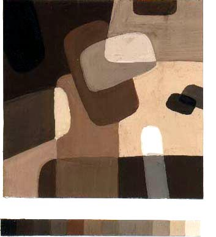

Основы колористики
Полухроматическая композиция
Главная
>
Практические упражнения
> Основы колористики – Полухроматическая композиция
2.2. Полярная композиция
2.3. Трехцветная композиция
2.4. Четырехцветие и многоцветие
2.5. Полухроматическая композиция
2.6. Ахроматическая композиция
2.7. Многоцветие в мозаичной технике
3. Реклама на плоскости

Полухроматическая композиция в теплой гамме
«–» в холодной гамме
«–» в холодной гамме
«–» в теплой гамме
«–» в нейтральной гамме